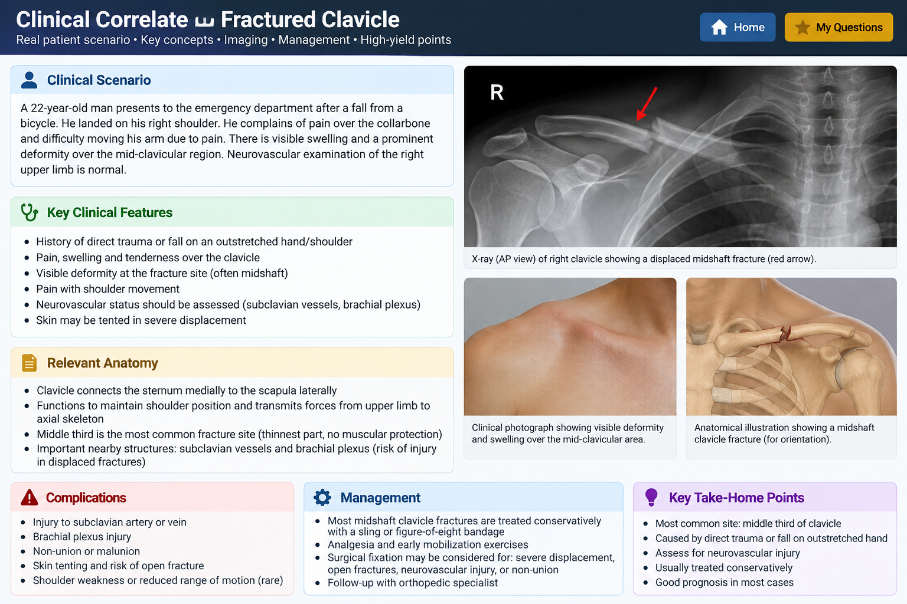

A 22-year-old man presents after falling directly onto his right shoulder during a football match. He develops severe pain over the right clavicle, swelling and a palpable irregularity over the clavicular region. Shoulder movement is painful and limited.
The distal upper limb is warm, with a palpable radial pulse and initially intact motor and sensory function.
The clavicle connects the upper limb to the axial skeleton. Medially, it articulates with the sternum and first costal cartilage, while laterally it articulates with the acromion.
A common fracture occurs near the junction of the medial two-thirds and lateral one-third of the clavicle. Displacement of the fragments is influenced by muscle forces and the weight of the upper limb.
The sternocleidomastoid attaches to the medial part of the clavicle and can elevate the medial fracture fragment. The lateral fragment remains associated with the shoulder girdle and is influenced by the weight of the upper limb.
Loss of the normal clavicular strut can result in shortening and altered mechanics of the shoulder girdle.
A displaced clavicular fracture requires careful neurovascular assessment.
Structures in the region include the subclavian vessels and brachial plexus.
Supraclavicular nerves are also close to the clavicle and may contribute to persistent sensory symptoms or pain following injury.
Assess the patient for swelling, deformity, tenderness and abnormal movement around the clavicle. Shoulder movement is commonly painful.
The distal limb should also be assessed for circulation, including the radial pulse and perfusion, together with motor and sensory function because of the nearby neurovascular structures.
Important complications to consider include neurovascular injury, persistent pain or sensory symptoms, malunion, non-union, shortening and alteration of shoulder mechanics.
1. Which muscle tends to elevate the medial fragment?
2. Which major neurovascular structures should be assessed in a displaced clavicle fracture?
3. What is the main mechanical role of the clavicle?
Snell's Clinical Anatomy / Clinical Anatomy by Regions — clavicle anatomy, articulations, function as a strut, fracture location, fragment displacement and relevant clinical relationships.
Page number: Exact page should be checked against the specific Snell edition being used rather than inserting an unverified page number.
🩻 This is an AI-generated educational illustration, not a real patient's radiograph.